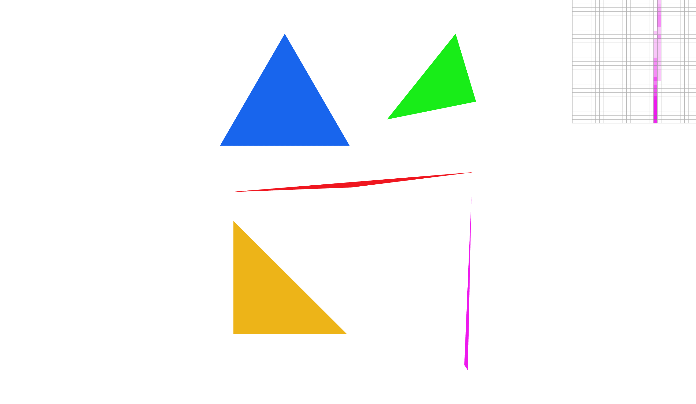
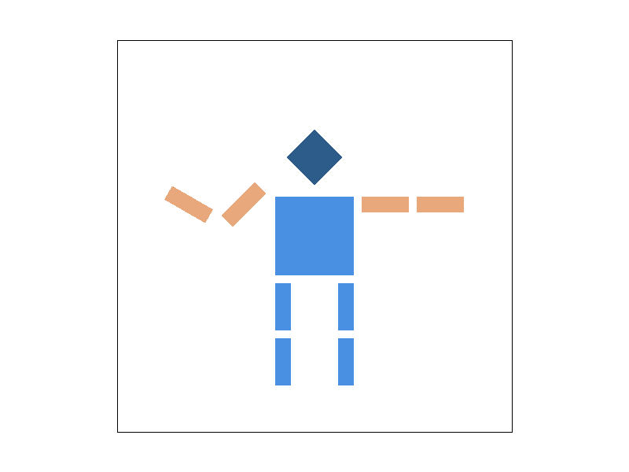
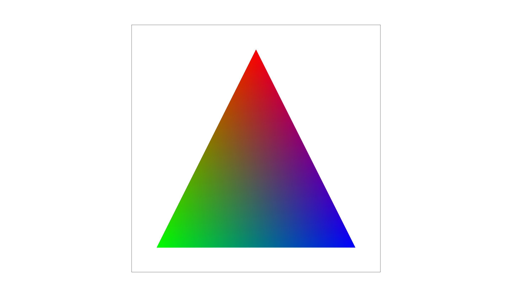
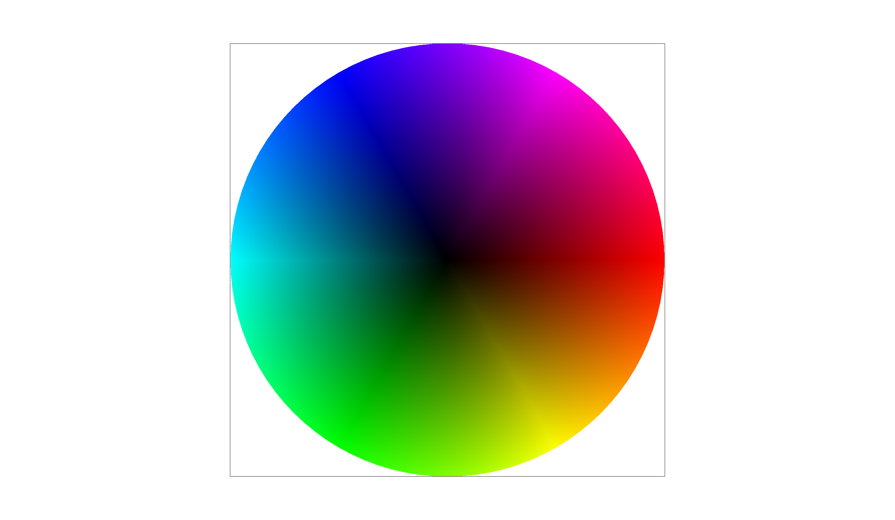
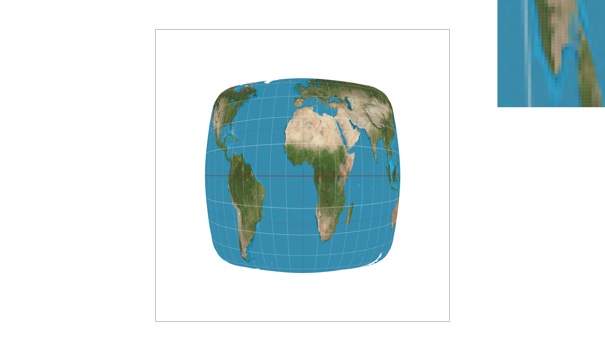
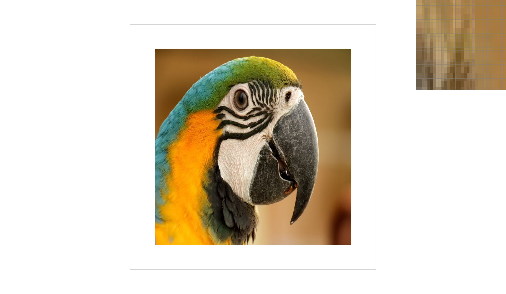

CS184/284A Spring 2025 Homework 1 Write-Up
Link to webpage: https://cal-cs184-student.github.io/hw-webpages-PiggySusie/
Link to GitHub repository: https://github.com/cal-cs184-student/hw1-rasterizer-jinnnn
Overview
This assignment implements a software rasterizer for rendering 2D SVG graphics. The rasterizer handles triangle rasterization, antialiasing through supersampling, geometric transformations, barycentric color interpolation, and texture mapping with different sampling methods.
What I Built
The core rasterization pipeline includes:
- Triangle rasterization using edge functions with bounding box optimization
- Supersampling antialiasing with grid and jittered sampling patterns
- 2D transformations (translation, scaling, rotation) using homogeneous coordinates
- Barycentric interpolation for smooth color gradients across triangles
- Texture mapping with nearest-neighbor and bilinear pixel sampling
- Mipmap level sampling for texture minification antialiasing
Key Learnings
This assignment helped me understand:
- How rasterization converts continuous geometric primitives into discrete pixels
- The tradeoffs between sampling quality and performance
- How edge functions efficiently determine point-in-triangle tests
- The importance of antialiasing techniques for high-quality rendering
- How barycentric coordinates enable smooth interpolation across triangles
- The role of mipmaps in reducing texture aliasing artifacts
The most challenging part was implementing UV differentials for mipmap level calculation, which required understanding how texture coordinates change across screen space.
Task 1: Drawing Single-Color Triangles
Walk through how you rasterize triangles
I implemented triangle rasterization using edge functions. The algorithm works as follows:
- Compute bounding box: Find the min/max x and y coordinates of the three vertices to get the bounding box.
- Convert to pixel coordinates: Use
floor()for min values andceil()for max values to get the pixel range. - Clamp to screen: Make sure the bounding box stays within the framebuffer bounds.
- Iterate through pixels: For each pixel in the bounding box: Sample at pixel center:
(x + 0.5, y + 0.5); Test if this point is inside the triangle using edge functions. - Edge function: For an edge from point A to B, the edge function is:
Positive = point is to the left (counter-clockwise); Negative = point is to the right (clockwise); Zero = point is on the edge.f(x, y) = (y - yA) * (xB - xA) - (x - xA) * (yB - yA) - Inside test: A point is inside if all three edge function values have the same sign (or zero). This handles both clockwise and counter-clockwise ordering.
- Fill pixel: If inside, call
fill_pixel(x, y, color).
Algorithm efficiency: no worse than bounding box sampling
The algorithm only checks pixels within the triangle's bounding box. I iterate through exactly these pixels:
for (int y = start_y; y <= end_y; y++) {
for (int x = start_x; x <= end_x; x++) {
// Check sample at (x+0.5, y+0.5)
}
}where start_x = floor(min_x), end_x = ceil(max_x), etc. The number of samples is exactly (end_x - start_x + 1) × (end_y - start_y + 1), which is the minimum needed.
Screenshot of basic/test4.svg

Extra Credit: Optimizations
Pre-compute edge function coefficients; incremental edge function evaluation (subtract dy when moving right); reduced memory access. Timing comparison:
| Test Case | Basic | Optimized | Speedup |
|---|---|---|---|
| test3.svg | 16.951 ms | 15.396 ms | 1.10x |
| test4.svg | 0.597 ms | 0.408 ms | 1.46x |
| test5.svg | 1.279 ms | 0.917 ms | 1.39x |
| test6.svg | 1.019 ms | 0.690 ms | 1.48x |
Average speedup ~1.36x. Smaller triangles show better speedup (~1.4–1.5x).
Task 2: Antialiasing by Supersampling
Walk through your supersampling algorithm and data structures
Data Structure: sample_buffer has size width * height * sample_rate. For each pixel (x,y), samples are at base_index = (y * width + x) * sample_rate.
Algorithm: Compute grid layout (e.g. 4×4 for sample_rate=16); place samples at grid (or jittered) positions; for each pixel, test each sample with edge functions and store color; resolve by averaging samples per pixel to framebuffer.
Why is supersampling useful?
Supersampling reduces aliasing by smoothing edges (partial coverage), reducing stair-stepping, and giving better approximation of continuous geometry.
Modifications to the rasterization pipeline
fill_pixel() fills all sample_rate samples; rasterize_triangle() uses multiple samples per pixel in a grid; resolve_to_framebuffer() averages samples; buffer resizing and clearing updated for sample_buffer.
Screenshots Comparison
Sample Rate 1:  — Clear aliasing, stair-stepping.
— Clear aliasing, stair-stepping.
Sample Rate 4 (2×2):  — Edges smoother, partial coverage.
— Edges smoother, partial coverage.
Sample Rate 16 (4×4):  — Very smooth edges.
— Very smooth edges.
Extra Credit — Jittered Sampling: Grid vs Jittered — 

— Jittered breaks up regular patterns, better for thin features. Toggle withP key (P_NEAREST = grid, P_LINEAR = jittered).
Task 3: Transforms
Implementation
translate(dx, dy) — translation matrix; scale(sx, sy) — scaling matrix; rotate(deg) — counterclockwise rotation matrix (deg in degrees, convert to radians). All in homogeneous 3×3 form.
Custom Robot: Waving Cubeman
Created docs/my_robot.svg: blue body/head, orange arms; left arm waving (upper rotated -45°, lower translated and rotated 30°).

Extra Credit: Viewport Rotation
Q = rotate counterclockwise 15°; E = clockwise 15°; Space = reset. Rotation applied in NDC around center (0.5, 0.5).

Task 4: Barycentric Coordinates
Explanation
Point P in triangle with vertices A, B, C: P = α·A + β·B + γ·C with α+β+γ=1, α,β,γ≥0. α = area(PBC)/area(ABC), etc.

Implementation
Use edge functions to get signed areas; divide by triangle area to get α, β, γ; interpolate color as α*c0 + β*c1 + γ*c2.

Task 5: Pixel Sampling for Texture Mapping
Explanation
P_NEAREST: Round UV to nearest texel — fast, can be blocky when magnified. P_LINEAR: Bilinear interpolation of 4 surrounding texels — smooth, fewer artifacts.
Implementation
sample_nearest(): UV→texel, round, clamp, return. sample_bilinear(): get four texels, interpolate horizontally then vertically. In rasterize_textured_triangle(): interpolate UV with barycentrics, then sample texture.
Comparison Screenshots
Nearest 1:  — Nearest 16:
— Nearest 16: 
Bilinear 1:  — Bilinear 16:
— Bilinear 16:

Bilinear gives smoother texture; difference largest under magnification, low-res textures, gradients, and with high sample rates.
Task 6: Level Sampling with Mipmaps
Explanation
Mipmap levels 0, 1, 2... (full, half, quarter resolution). Level from UV rate of change: L = max(||du/dx||, ||dv/dy||), level = log2(L). L_ZERO = always level 0; L_NEAREST = round level; L_LINEAR = interpolate between two levels (trilinear with P_LINEAR).
Implementation
get_level(sp): compute duv_dx, duv_dy from p_uv, p_dx_uv, p_dy_uv; scale by texture size; L = max of norms; level = log2(L). sample() uses lsm/psm to pick level and pixel sampling. Rasterizer passes UV at (x,y), (x+1,y), (x,y+1) for derivatives.
Tradeoffs
Speed: P_NEAREST < P_LINEAR; L_ZERO < L_NEAREST < L_LINEAR. Antialiasing: L_NEAREST/L_LINEAR reduce minification aliasing; P_LINEAR helps magnification. Best quality: P_LINEAR + L_LINEAR + 16 samples; good balance: P_LINEAR + L_NEAREST + 4 samples.
Comparison Screenshots
L_ZERO+P_NEAREST:

L_ZERO+P_LINEAR:
L_NEAREST+P_NEAREST:  L_NEAREST+P_LINEAR:
L_NEAREST+P_LINEAR: 
(Optional) Task 7: Extra Credit — Draw Something Creative!
Artwork: Cute Beagle
Stylized beagle with colored triangles: head, body, ears, legs, tail, snout. Colors: white, tan, brown, black, pink. Oval shapes from triangles with barycentric interpolation; Python script src/generate_art.py generates docs/competition.svg.

Run: cd src && python generate_art.py to regenerate.